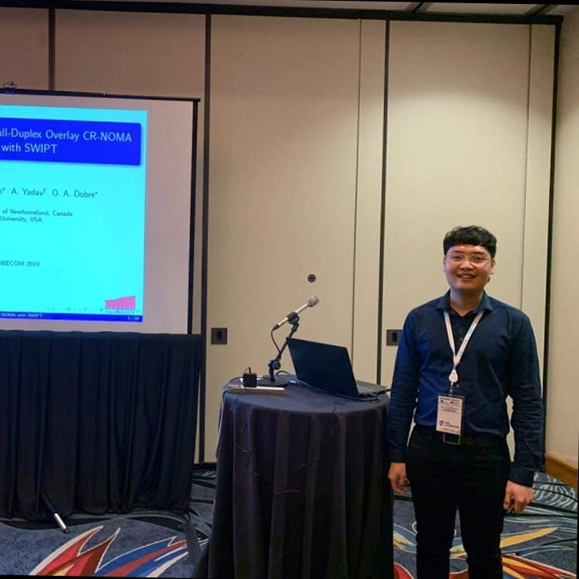
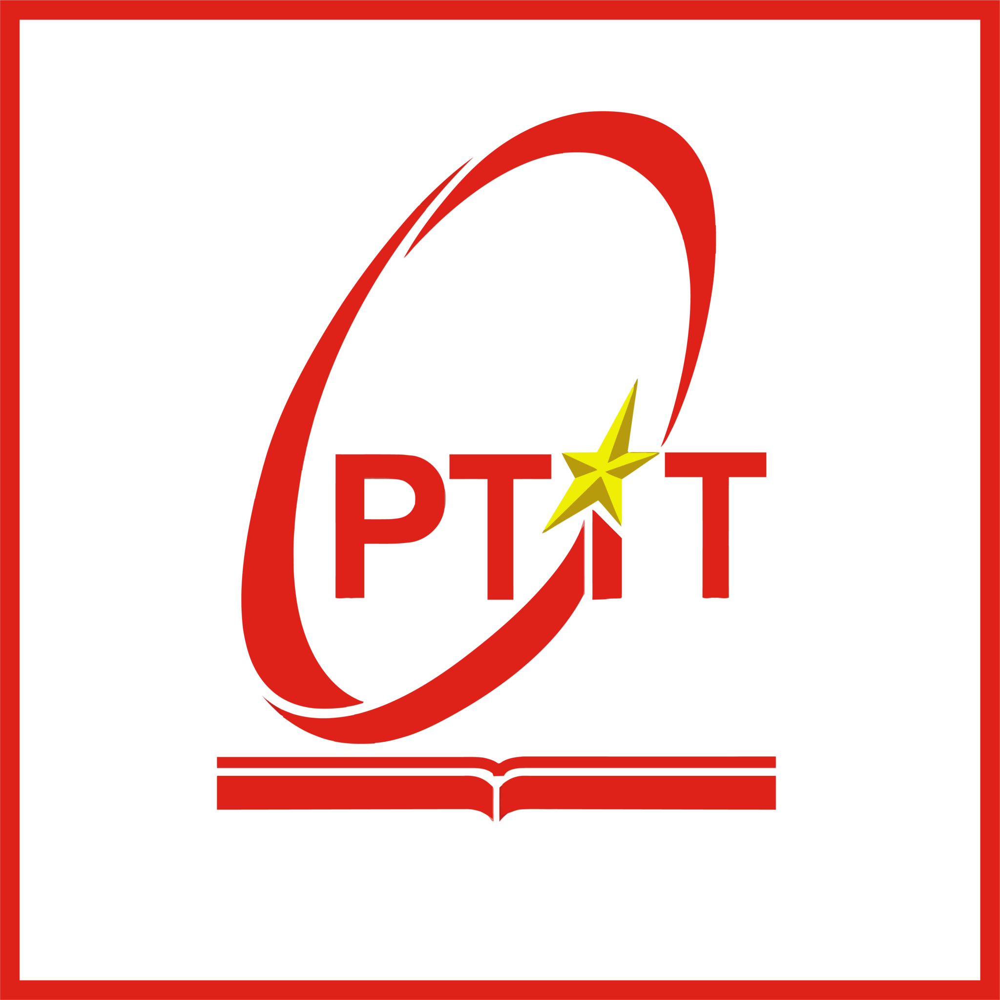

Quang Nhat Le
My research interests include machine learning for communications, resource allocation, and 5G and beyond enabling technologies.
ML for Communications
Resource Allocation
5G/6G

About
I am currently a Postdoctoral Researcher in the Electrical and Computer Engineering department at Memorial University of Newfoundland (MUN), St. John's, NL, Canada, under the supervision of Prof. Trung Q. Duong. In 2024, I received the Ph.D. degree in Electrical Engineering from MUN under the supervision of Prof. Octavia A. Dobre. In 2018, I received the M.Sc. degree (Distinction) in Electronics and Computer Engineering from Hongik University, Sejong, South Korea, under the supervision of Prof. Beongku An. In 2016, I received the B.Eng. degree (Distinction, ranked second) in Electronics and Communications Engineering from the Posts and Telecommunications Institute of Technology (PTIT), Ho Chi Minh City, Vietnam. I am also honored to serve as a Managing Editor of the IEEE Communications Surveys & Tutorials (IEEE COMST).
Education
Memorial University of Newfoundland
Ph.D., Electrical Engineering
Sep 2018 – Apr 2024
Hongik University (Sejong)
M.Sc., Electronics & Computer Engineering
Mar 2016 – Feb 2018

Posts & Telecommunications Institute of Technology (PTIT)
B.Eng., Electronics & Communications Engineering
Sep 2011 – Feb 2016
Positions
Research
Machine Learning for Communications
Learning-based methods for signal processing, channel estimation, and system optimization in modern wireless networks.
Deep LearningWireless
Resource Allocation
Algorithms for scheduling, power control, and spectrum management across diverse QoS constraints and network conditions.
OptimizationConvex/Nonconvex
5G and Beyond
Architectures and enablers for next-generation networks with stringent reliability, latency, and throughput requirements.
5G/6GMIMOEdge
Publications
No publications matched your filter.
Teaching
Courses Assisted (MUN)
- Communication Networks (ENGI 6876)
- Wireless and Mobile Communications (ECE 8620 / ENGI 9878)
- Introduction to Systems and Signals (ECE 4600)
- Information Theory and Coding (ENGI 9871)
- Communication Principles (ECE 6600)
- Digital Communications (ENGI 9872)
Honors & Awards
Outstanding Teaching Assistant Award
May 2022Exemplary Reviewer
Dec 2021Student Travel Grant Award
Dec 2019Service
Editorial
Contact
- Quang Nhat Le’s Profile: linkedin.com/in/quang-nhat-le-b87753223
- Website: scholar.google.co.kr/citations?user=UeMDKzkAAAAJ&hl=en (Google Scholar)
- Email: qnle@mun.ca
I’m open to collaborations and student mentoring. Feel free to reach out.